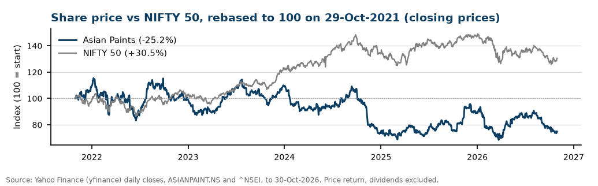
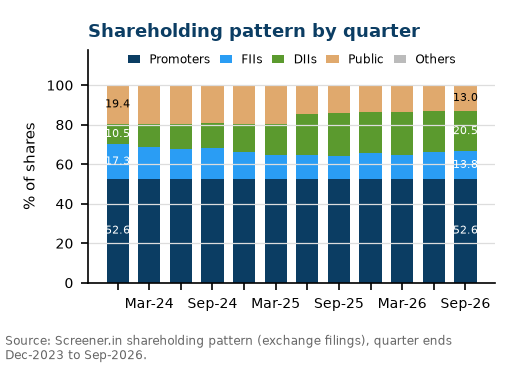
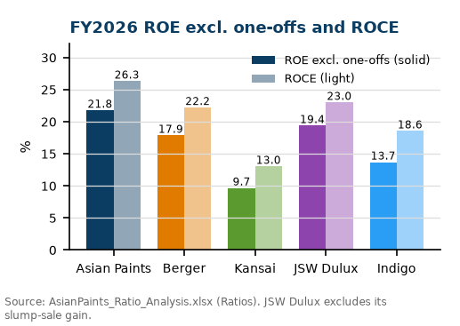
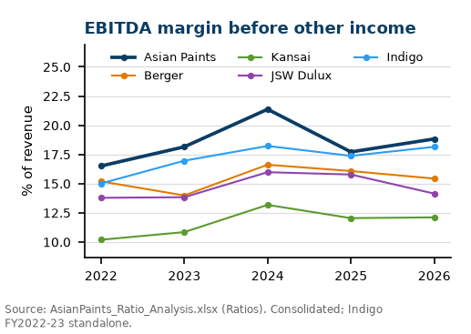
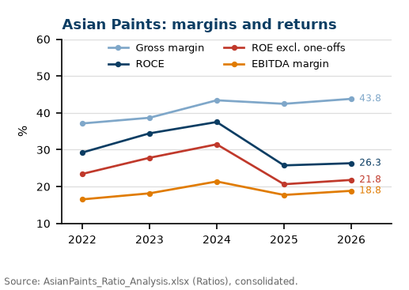
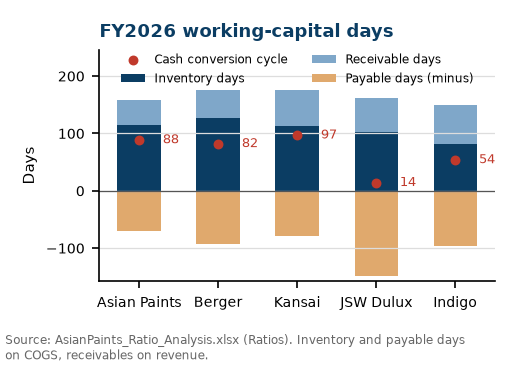
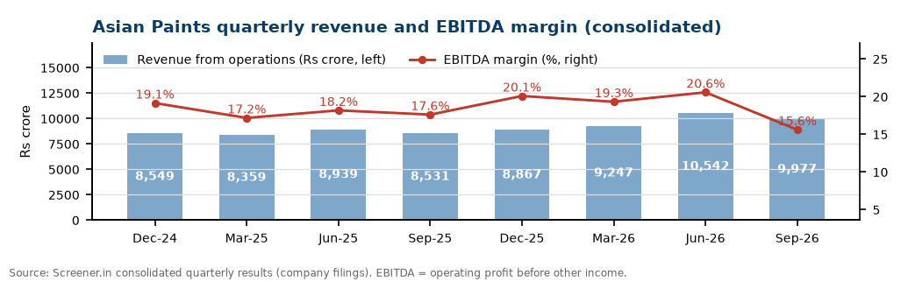
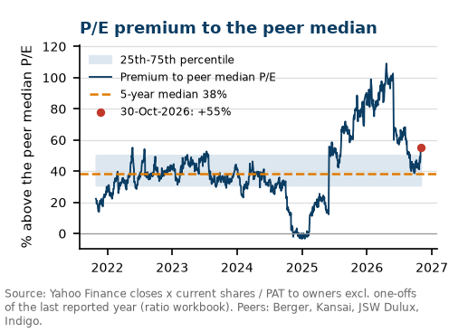
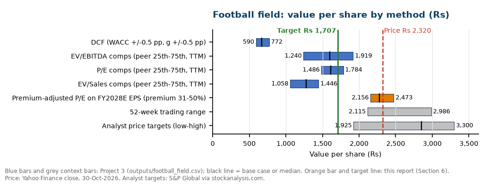

| 12-month target | ₹1,707 |
| Price, 30-Oct-2026 | ₹2,320.00 |
| Upside / (downside) | -26.4% |
| Market cap (₹ cr) | 222,534 |
| 52-week range (₹) | 2,115 - 2,986 |
| Shares (cr) | 95.92 |
| P/E, trailing | 45.0x |
| P/E, FY27E consensus | 43.0x |
| Price / book | 10.2x |
| Dividend yield | 1.19% |
| Promoters, Sep-26 | 52.65% |
| NIFTY 50 | 23,053.10 |
| Return 1y/3y/5y | -8%/-22%/-25% |
| NIFTY 1y/3y/5y | -11%/+20%/+30% |
Sources: Yahoo Finance, Screener.in (market cap, P/E, book value, dividend yield), StockAnalysis.com (consensus, 30 analysts), company filings. Consolidated figures, ₹ crore unless stated.
| Year to March | FY25A | FY26A | FY27E (P3) | FY28E (P3) | Consensus FY27E | Consensus FY28E |
|---|---|---|---|---|---|---|
| Revenue (₹ cr) | 33,906 | 35,584 | 41,349 | 44,657 | 41,672 | 44,854 |
| Revenue growth | -4.5% | +4.9% | +16.2% | +8.0% | +17.1% | +7.6% |
| EBITDA (₹ cr) | 6,006 | 6,700 | 7,267 | 8,262 | 7,544 | |
| EBITDA margin | 17.7% | 18.8% | 17.6% | 18.5% | 18.1% | |
| PAT to owners (₹ cr) | 3,667 | 4,325 | 5,013 | 5,615 | ||
| EPS (₹) | 38.23 | 45.09 | 52.27 | 58.54 | 53.94 | 60.40 |
| P/E at ₹2,320 (x) | 60.7x | 51.5x | 44.4x | 39.6x | 43.0x | 38.4x |
| ROE excl. one-offs | 20.6% | 21.8% | - | - | ||
| Dividend per share (₹) | 24.80 | 27.50 | - | - | 31.10 |
FY25A-FY26A from company filings via the ratio workbook; EPS = PAT to owners / 95.92 cr shares. FY27E-FY28E from Project 3's DCF model (FY27E = H1 FY27 actual + H2 forecast). ROE and dividends are not forecast. Consensus = S&P Global via StockAnalysis.com (FY27E downloaded 1-Nov-2026; FY28E as collected by Project 3).

Asian Paints earns more on its capital than any listed rival. In FY2026 its ROE excluding one-offs was 21.8% (peer median 15.8%), ROCE 26.3% (median 20.4%) and EBITDA margin 18.8% (median 14.8%). Cash conversion was the best of the five: cash from operations was 106% of EBITDA and the free-cash-flow margin 15.7% (median 7.4%). The balance sheet holds net cash (net debt / EBITDA -0.70x). The moat is scale and reach: revenue of ₹35,584 cr is 3.0x Berger's, it billed 72,873 dealers in FY2026, runs 2.29 million KL of in-house decorative capacity and added about 6,000 retail touchpoints in the year. Scale spreads advertising, tinting machines and logistics over more litres, which is why Asian Paints converts a similar gross margin (43.8% vs Indigo's 46.5%) into a higher operating margin.
Demand improved through FY2026 and H1 FY27. Consolidated net sales grew +16.9% in Q2 FY27 and +17.4% in H1. Decorative volume grew 6.4% in Q2 (about 8% in H1), and industrial coatings grew 31.8%. The problem is cost. Crude-linked raw materials rose sharply in 2026; management estimated inflation near 20% in May against about 11% of price increases. Standalone gross margin fell to 40.3% in Q2 (-339 bp) and consolidated PBDIT margin to 15.6%. Management kept its 18-20% standalone EBITDA margin band for FY27 (standalone H1: 19.6%; Q2: 17.1%), is taking further staggered price increases and has commissioned phase 1 of its VAE emulsion plant, which it expects to give a 300-500 bp cost advantage on the products that use it. The margin path in H2 FY27 is the main swing factor for earnings.
Two large groups now compete head-on. Grasim launched Birla Opus in 2024, built 1,332 million litres of capacity (about 24% of the organised industry) and says it reached about 10% revenue share of decorative paints within two years. The JSW group, whose JSW Paints is about five years old, bought 60.76% of Akzo Nobel India in December 2025 and renamed it JSW Dulux. Industry estimates put Asian Paints' decorative share at about 59% around March 2024 and about 52% a year later. The effect is visible in our ratios: ROE excluding one-offs fell from 31.5% in FY2024 to 21.8% in FY2026, EBITDA margin from 21.4% to 18.8%, and revenue grew only 1.0% a year over FY2023-FY2026 against 10.4% a year over FY2021-FY2026. Management said in May 2026 that discounting to dealers and contractors shows no let-up.
At ₹2,320 the stock trades on 45.0x trailing earnings and 43.0x FY27E consensus EPS of ₹53.94. Listed peers trade at 44.2x (Berger), 31.4x (JSW Dulux), 31.0x (Indigo) and 22.1x (Kansai) trailing earnings (Screener, 30-Oct-2026). The share price fell -25.2% in five years while the NIFTY 50 rose +30.5%, but the whole sector fell with it: the peer median trailing P/E dropped from 77.5x to 32.3x (our calculation, Section 6). Relative to peers Asian Paints is not cheaper than usual: its P/E premium is 55% against a 5-year median of 38%. On cash flows the gap is wider. To reach ₹2,320, Project 3's DCF needs free cash flow to grow 11.05% a year forever after FY2031, which means the business would still be worth about 33x EBITDA in FY2031, close to today's 30.4x. Revenue grew 1.0% a year over FY2023-FY2026. Our 12-month target of ₹1,707 (-26.4%) blends DCF, peer comps and a premium-adjusted P/E (Section 6). Under our rule (Buy above +15%, Hold from -10% to +15%, Sell below -10%) the rating is SELL. The call is about the price: Asian Paints remains the strongest business in the group.
Sources: ratio workbook (outputs/ratios_fy2022_fy2026.csv, peer_comparison_fy2026.csv); Q2 FY27 results and investor presentation (29-Oct-2026); Q4 FY26 call transcript (29-May-2026); Grasim and press reports listed in Appendix C.
Asian Paints is India's largest paint and decor company (FY2026 consolidated turnover ₹35,516 cr per the company). Decorative paints for homes (interior and exterior emulsions, enamels, waterproofing, putty) sold through dealers are the core. It also owns two industrial-coatings joint ventures with PPG, international paint businesses in 14 countries (Middle East, South Asia, Africa, South Pacific) and a home-decor arm (kitchens, bath fittings, lighting, uPVC windows, 74 Beautiful Homes stores). Brands include Royale, Apex, Apcolite, Tractor and Ace.
Assets. In-house decorative capacity 2.29 million KL a year (13 plants plus 30 outsourced processing centres); 25 paint plants across the group. 72,873 dealers and distributors billed in FY2026 (75,793 in FY2025), with 99% of sales through them and no dealer concentration (top 10 = 0.9%). Phase 1 of a 150,000 MT VAE emulsion plant at Dahej started in Q2 FY27 (total project about ₹3,250 cr), the first step into making its own key raw materials.
| Business (₹ cr) | Q2 FY27 | YoY | H1 FY27 | YoY |
|---|---|---|---|---|
| Consolidated net sales | 9,953.9 | +16.9% | 20,475.3 | +17.4% |
| Standalone (mainly decorative India) | 8,423.6 | +14.8% | 17,580.1 | +15.8% |
| International (14 countries) | 1,095.6 | +29.5% | 2,032.1 | +28.4% |
| PPGAP JV: auto OE, refinish, marine | 794.8 | +33.7% | 1,446.7 | +23.8% |
| APPPG JV: protective, powder | 374.5 | +28.0% | 747.4 | +24.6% |
| Home decor: kitchens | 110.3 | +12.9% | 218.3 | +11.5% |
| Home decor: bath fittings | 94.0 | +18.5% | 178.9 | +6.6% |
Source: Q2 FY27 press release (data/asianpaints_q2fy27_results.csv). Segments overlap with standalone and are not additive. JV figures are 100% of the JV.
The domestic paint industry was about ₹77,500 cr in FY2025 (Kansai Nerolac estimate, up from ₹75,000 cr), with decorative paint the larger part. Demand comes from repainting (homes are repainted every few years, so demand is steadier than new construction), new housing and real estate, rural incomes and the monsoon. The June-September 2026 monsoon delivered about 87% of the long-period average, the weakest since 2015, a risk for rural demand in H2 FY27. Raw materials are about 56% of Asian Paints' revenue (FY2026 COGS / revenue). The main inputs are crude-linked monomers, solvents and emulsions, and titanium dioxide (white pigment). India reimposed anti-dumping duty of USD 460-681 a tonne on some Chinese TiO2 for five years in October 2026. The rupee at 95.15 per US dollar (30-Oct-2026) raises the cost of imported inputs.
| Player | What changed | Source |
|---|---|---|
| Birla Opus (Grasim) | Launched 2024; 1,332 mn litres capacity (about 24% of organised capacity); claims about 10% decorative revenue share; Q1 FY27 paints revenue ₹1,661 cr (+64%) | Grasim; BusinessWorld 31-Oct-2026; NDTV Profit 13-Aug-2026 |
| JSW Dulux (ex Akzo Nobel India) | JSW Paints bought 60.76% from AkzoNobel on 10-Dec-2025; renamed 11-Mar-2026; now the No. 3 decorative player | JSW press release; ET BrandEquity 13-Mar-2026 |
| Pidilite (Haisha Paints) | Entered decorative paints in select regions, aimed at price-point gaps | ET BrandEquity 7-Mar-2024 |
| Incumbents (Berger, Kansai, Indigo) | Defending share with dealer discounts and incentives; dealers report steep discounts to clear stock since Aug-2026 | Moneycontrol 27-Oct-2026; AP Q4 FY26 call |

Promoters held 52.65% at Sep 2026. Domestic institutions rose from 10.5% (Dec 2023) to 20.5%, while foreign investors fell from 17.3% to 13.8%. Dividends per share were ₹19.15, 25.65, 33.30, 24.80 and 27.50 for FY2022-FY2026, about 61% of FY2026 EPS. The FY27 interim dividend is ₹5.75 (record date 4-Nov-2026).
The ratio workbook (AsianPaints_Ratio_Analysis.xlsx, live Excel formulas, 70 of 70 checks PASS) compares Asian Paints with Berger Paints, Kansai Nerolac, JSW Dulux and Indigo Paints over FY2022-FY2026 on consolidated data. Cost of goods sold is the company-reported total of materials, traded goods and inventory change; one-off items come from the filings. Rank 1 = best of five; the peer median excludes Asian Paints.
| FY2026 | Asian Paints | Berger | Kansai | JSW Dulux | Indigo | Peer median | AP rank |
|---|---|---|---|---|---|---|---|
| Gross margin | 43.8% | 42.5% | 35.5% | 41.4% | 46.5% | 42.0% | 2 |
| EBITDA margin (before other income) | 18.8% | 15.4% | 12.1% | 14.1% | 18.1% | 14.8% | 1 |
| Net margin excl. one-offs | 12.5% | 9.8% | 7.9% | 10.2% | 10.6% | 10.0% | 1 |
| ROE excl. one-offs | 21.8% | 17.9% | 9.7% | 19.4% | 13.7% | 15.8% | 1 |
| ROCE (EBIT / avg capital employed) | 26.3% | 22.2% | 13.0% | 23.0% | 18.6% | 20.4% | 1 |
| Asset turnover | 1.10x | 1.24x | 0.95x | 1.07x | 0.92x | 1.01x | 2 |
| Current ratio | 2.21x | 2.12x | 3.48x | 1.56x | 2.21x | 2.16x | 2 |
| Debt / equity (incl. leases) | 0.18x | 0.09x | 0.05x | 0.03x | 0.02x | 0.04x | 5 |
| Net debt / EBITDA (negative = net cash) | -0.70x | -0.35x | -2.34x | -0.45x | -1.22x | -0.84x | 3 |
| Interest cover (x) | 28.1x | 24.8x | 23.3x | 36.2x | 65.0x | 30.5x | 3 |
| Inventory days | 114 | 127 | 112 | 102 | 81 | 107 | 4 |
| Receivable days | 45 | 48 | 64 | 60 | 69 | 62 | 1 |
| Payable days | 70 | 93 | 80 | 148 | 96 | 95 | 5 |
| Cash conversion cycle (days) | 88 | 82 | 97 | 14 | 54 | 68 | 4 |
| Revenue growth | 4.9% | 2.9% | 2.9% | -11.6% | 4.8% | 2.9% | 1 |
| Cash from operations / EBITDA | 105.8% | 84.0% | 91.7% | 18.3% | 87.5% | 85.7% | 1 |
| Free-cash-flow margin | 15.7% | 8.6% | 8.5% | -30.7% | 6.3% | 7.4% | 1 |


Reading the table. Asian Paints leads on EBITDA margin, ROE excluding one-offs, ROCE, cash conversion and free cash flow. Indigo has the highest gross margin (46.5%) but a smaller scale. JSW Dulux's reported ROE of 104% comes from the gain on its slump sale to AkzoNobel; excluding it, ROE is 19.4%. Asian Paints' weak spot is working capital: payable days of 70 are the lowest of the five and its cash conversion cycle of 88 days ranks 4th. It also carries more lease and term debt than peers (D/E 0.18x), although it has net cash.
| FY2026 | Tax burden | Interest burden | EBIT margin | Asset turnover | Equity multiplier | ROE (product) | Net margin | ROE excl. one-offs |
|---|---|---|---|---|---|---|---|---|
| Asian Paints | 0.72x | 0.97x | 17.4% | 1.10x | 1.59x | 21.2% | 12.2% | 21.8% |
| Berger Paints | 0.76x | 0.96x | 13.0% | 1.24x | 1.47x | 17.2% | 9.5% | 17.9% |
| Kansai Nerolac | 0.74x | 0.96x | 10.3% | 0.95x | 1.29x | 9.0% | 7.3% | 9.7% |
| JSW Dulux | 0.83x | 0.99x | 66.1% | 1.07x | 1.77x | 104.4% | 54.8% | 19.4% |
| Indigo Paints | 0.73x | 0.99x | 14.3% | 0.92x | 1.39x | 13.3% | 10.3% | 13.7% |
5-step DuPont: ROE = tax burden (PAT / PBT) x interest burden (PBT / EBIT) x EBIT margin x asset turnover x equity multiplier (average assets / average equity). The product equals ROE for every company and year (workbook check). Asian Paints' lead comes from its EBIT margin (17.4% vs 13.0% at Berger), not from leverage (equity multiplier 1.59x vs 1.47x). Its asset turnover is lower than Berger's (1.10x vs 1.24x) because it holds large investments and new capacity (Dahej VAE) that is not yet earning.


Trend. Asian Paints' returns peaked in FY2024 (ROE excluding one-offs 31.5%, ROCE 37.5%) when raw materials were cheap. Gross margin has held at 43.8% in FY2026, but higher spending on advertising, discounts and new businesses cut the EBITDA margin to 18.8%, and capex of ₹2,496 cr in FY2024 and ₹1,830 cr in FY2025 enlarged the asset base. Five-year averages: ROE excluding one-offs 25.0%, ROCE 30.6%, EBITDA margin 18.5%.
| Weighted scorecard (lower = better) | FY2026 score | FY2026 place | 5-yr avg score | 5-yr place |
|---|---|---|---|---|
| Asian Paints | 1.43 | 1 | 2.33 | 1 |
| Berger Paints | 3.03 | 2 | 2.88 | 4 |
| Indigo Paints | 3.08 | 3 | 2.85 | 3 |
| JSW Dulux | 3.12 | 4 | 2.40 | 2 |
| Kansai Nerolac | 4.35 | 5 | 4.55 | 5 |
The scorecard ranks each company on the workbook's ratios with weights set before the results (Peer_Comparison sheet, section C). Asian Paints is first on the FY2026 data and on 5-year averages. It is still the strongest business in the group on returns, margins and cash, which supports a quality premium. The gap has narrowed since FY2024, and JSW Dulux is second on 5-year averages. The investment question is whether Asian Paints can hold its lead as competition rises, and whether the price already reflects it. Section 6 finds that the price assumes more than the lead is likely to deliver.
| ₹ crore | Q2 FY27 | Q2 FY26 | YoY | H1 FY27 | H1 FY26 | YoY |
|---|---|---|---|---|---|---|
| Net sales | 9,953.9 | 8,513.7 | +16.9% | 20,475.3 | 17,438.2 | +17.4% |
| PBDIT (EBITDA before other income) | 1,557.1 | 1,503.4 | +3.6% | 3,725.8 | 3,128.3 | +19.1% |
| Profit before tax | 1,477.8 | 1,391.5 | +6.2% | 3,573.5 | 2,900.2 | +23.2% |
| PAT after minority interest | 1,067.6 | 993.6 | +7.4% | 2,606.9 | 2,093.4 | +24.5% |
| Standalone net sales | 8,423.6 | 7,335.9 | +14.8% | 17,580.1 | 15,184.7 | +15.8% |
| Standalone PBDIT | 1,440.3 | 1,360.1 | +5.9% | 3,452.0 | 2,881.2 | +19.8% |
| Standalone PAT | 1,095.6 | 956.3 | +14.6% | 2,573.9 | 2,056.8 | +25.1% |
| PBDIT margin (consolidated) | 15.6% | 17.7% | -202 bp | 18.2% | 17.9% | +26 bp |
| PBDIT margin (standalone) | 17.1% | 18.5% | -144 bp | 19.6% | 19.0% | +66 bp |
| Gross margin (standalone) | 40.3% | 43.7% | -339 bp | 42.1% | 43.4% | -128 bp |
Source: Asian Paints Q2 FY27 results and press release, investor presentation (29-Oct-2026); typed into data/asianpaints_q2fy27_results.csv with page references. Consolidated revenue from operations was ₹9,976.5 cr (net sales plus other operating revenue).

| Broker (30-Oct-2026) | Rating | Target ₹ | View |
|---|---|---|---|
| Jefferies | Buy | 3,025 (from 3,350) | Margins to improve in H2 on mix, festive demand and price rises |
| Goldman Sachs | Sell | 2,375 (from 2,725) | Revenue beat, EBITDA missed; expects a further 3.5% price rise in Q3 |
| Systematix | Buy | 2,885 (from 3,285) | Volume growth of 8-10% over FY27-FY29; H2 gross margin -120 bp YoY |
| Dolat Capital | Buy | 2,870 (from 3,320) | EBITDA and PAT missed; TiO2 anti-dumping duty adds cost |
Source: The Economic Times, 30-Oct-2026 (targets as reported). StockAnalysis.com consensus, Oct 2026: 14 strong buy, 5 buy, 9 hold, 3 sell, 3 strong sell (34 ratings); price targets low ₹1,925, average ₹2,756, median ₹2,850, high ₹3,300.
| Year to March | FY26A | FY27E | FY28E | FY29E |
|---|---|---|---|---|
| Revenue (₹ cr) | 35,584 | 41,349 | 44,657 | 48,453 |
| Revenue growth | +4.9% | +16.2% | +8.0% | +8.5% |
| EBITDA (₹ cr) | 6,700 | 7,267 | 8,262 | 9,206 |
| EBITDA margin | 18.8% | 17.6% | 18.5% | 19.0% |
| PAT to owners (₹ cr) | 4,325 | 5,013 | 5,615 | 6,269 |
| EPS (₹) | 45.09 | 52.27 | 58.54 | 65.36 |
| EPS growth | +17.9% | +15.9% | +12.0% | +11.7% |
| Free cash flow to the firm (₹ cr, Project 3) | 4,330 | 2,500 | 3,680 | 4,232 |
| Consensus revenue (₹ cr) | 41,672 | 44,854 | n/a | |
| Consensus EPS (₹) | 53.94 | 60.40 | n/a | |
| Project 3 EPS vs consensus | -3.1% | -3.1% |
The forecasts are Project 3's DCF forecasts, so the earnings table and the valuation use one set of numbers. FY2027E is H1 FY27 as reported (revenue from operations ₹20,518 cr, +17.5%; EBITDA margin 18.2%) plus an H2 forecast of +15.0% revenue growth at a 17.0% margin, after Q2's 15.6%. From FY2028E revenue grows 8.0%-8.5% a year and the margin recovers to 18.5%-19.0%. Free cash flow dips in FY2027E because trade working capital rose by ₹1,668 cr in H1.
Project 3 vs consensus. Project 3's EPS is -3.1% against consensus in FY2027E (₹52.27 vs ₹53.94, 30 analysts) and -3.1% in FY2028E (₹58.54 vs ₹60.40). Revenue is close (-0.8% in FY2027E, -0.4% in FY2028E), so the gap is the margin. Consensus EBITDA of ₹7,544 cr implies 18.1% for FY2027E and about 18.1% in H2, against Project 3's 17.6% and 17.0%: analysts expect price increases to restore margins sooner. We keep Project 3's more cautious view because Q2 standalone gross margin fell -339 bp and the anti-dumping duty on Chinese titanium dioxide reimposed in October 2026 adds cost in H2.
| Input / output | Value |
|---|---|
| WACC (cost of equity 12.81% = 7.41% + 0.90 x 6.0%) | 12.68% |
| Terminal growth after FY2031E | 6.0% |
| Terminal value: share of EV; multiple of FY2031E EBITDA | 77%; 7.6x |
| DCF value per share (vs price -71%) | ₹668 |
| WACC and g +/-0.5 pp (+/-1.0 pp) | 590-772 (530-921) |
| Same cash flows, exit at the peer median 20.9x EBITDA | ₹1,540 |
| Perpetual growth implied by ₹2,320 (reverse DCF) | 11.05% |
| FY2031E EV/EBITDA implied by ₹2,320 | 32.8x |
| Multiple | Peer median | Asian Paints | ₹/share at 25th / median / 75th |
|---|---|---|---|
| P/E, TTM | 31.2x | 44.9x | 1,486 / 1,610 / 1,784 |
| EV/EBITDA, TTM | 20.9x | 30.4x | 1,240 / 1,597 / 1,919 |
| P/E, FY2027E consensus | 28.1x | 43.0x | used in the P/E lens below |
Peer median excludes Asian Paints; TTM to Sep-2026 for Asian Paints and Indigo, Jun-2026 for the other three. P/E is the steadier anchor: dropping any one peer moves its value only between ₹1,602 and ₹1,618. Asian Paints' premium to the median: 44% on P/E, 46% on EV/EBITDA. Source: Project 3 (AsianPaints_Comps_and_DCF.xlsx, outputs/*.csv).
Why the DCF is far below the price. Three features of a five-year DCF push the value down for a business like this. (1) Horizon. Growth falls straight to 6.0% after FY2031, so 77% of the value sits in a terminal value worth only 7.6x FY2031E EBITDA, below every listed peer today (12.0x-28.0x). With a 20.9x exit multiple the same cash flows give ₹1,540. (2) Reinvestment. At a 26.3% ROCE each extra year of growth adds value, and a five-year horizon stops counting it; EPS grew 9.5% a year over FY2016-FY2026, above the 6.0% terminal rate. (3) Discount rate. The 12.81% cost of equity adds a 6.0% premium to a G-sec yield that already contains India's default spread; Damodaran's method gives 11.91%. The discount rate is not the main gap: the most generous corner of the grid (WACC -1 pp, g +1 pp) still gives only ₹921. Reverse DCF. At ₹2,320 free cash flow must grow 11.05% a year forever after FY2031, only 1.6 points below the WACC. Put another way, the market expects Asian Paints to be worth about 33x EBITDA in FY2031, close to today's 30.4x: it is paying for a high-growth phase that lasts well beyond five years. That may happen, but revenue grew 1.0% a year over FY2023-FY2026 and two large new competitors are adding capacity, so we do not pay for it in full.
This lens asks what Asian Paints is worth if it keeps the P/E premium the market has paid for it over peers, at today's peer multiple. For each of the 1,236 trading days from 29-Oct-2021 to 30-Oct-2026, each company's P/E = market value (close x today's shares; Yahoo restates past prices for bonus issues and splits) / PAT to owners excluding one-offs of the last reported year, and the premium is Asian Paints' P/E over the median of the four peers. We apply the 5-year median premium to the peers' median P/E on FY2027E consensus EPS (all five companies on the same year) and to FY2028E EPS, the year the market will price in 12 months. We use the premium rather than Asian Paints' own P/E band because the whole sector de-rated: the peer median fell from 77.5x to 32.3x, and Asian Paints from 94.7x to 50.1x (own 5-year range 37x-110x).
| Step | Value |
|---|---|
| 5-year median premium to the peer median P/E (25th-75th) | 38.2% (31%-50%) |
| x peer median P/E on FY2027E consensus EPS (Project 3) | 28.1x |
| = premium-adjusted P/E | 38.9x |
| x FY2028E EPS (Project 3) | ₹58.54 |
| = premium-adjusted value (premium 25th-75th) | ₹2,276 (2,156-2,473) |
| Cross-check, trailing: 32.3x x (1 + 38%) x FY2027E EPS | ₹2,336 |
| Not used: own 5-year median P/E 67.6x x FY2027E EPS | ₹3,532 |

| Component | ₹/share | Weight | Why this weight (fixed before the target was calculated) |
|---|---|---|---|
| DCF (Project 3) | ₹668 | 25% | Only cash-flow method; biased low here (5 explicit years, then 6% growth: exit at 7.6x EBITDA, below every peer) |
| Peer comps, P/E median (Project 3) | ₹1,610 | 25% | Today's market price for the sector; P/E median steady when any peer is dropped, but peers earn lower returns |
| Premium-adjusted P/E (this report) | ₹2,276 | 50% | Matches the 12-month horizon and the premium paid for Asian Paints over 5 years; not 100%: the premium can shrink |
| 12-month target price | ₹1,707 | 100% | Upside vs ₹2,320.00: -26.4%. Rating: SELL |
| Weighting | DCF / comps / rel. (%) | Target ₹ | Upside | Rating |
|---|---|---|---|---|
| Base case | 25 / 25 / 50 | ₹1,707 | -26.4% | SELL |
| Equal weights | 33 / 33 / 33 | ₹1,518 | -34.6% | SELL |
| DCF-heavy | 50 / 25 / 25 | ₹1,305 | -43.7% | SELL |
| No DCF | 0 / 25 / 75 | ₹2,109 | -9.1% | HOLD |
| Base weights, own P/E band as the relative lens | 25 / 25 / 50 | ₹2,335 | +0.7% | HOLD |
Rating: SELL. The blended target of ₹1,707 is 26.4% below the price. How far below depends on the DCF weight, but every weighting puts the target under the price: ₹1,518 with equal weights, and ₹2,109 (-9.1%, a Hold) with no weight on the DCF. Only Asian Paints' own 2021-26 P/E band (median 67.6x) would lift the target to about the price (₹2,335); we do not use it because that band comes from years when the whole sector traded near 77x earnings, before the new entrants. Our target is below the lowest analyst target (₹1,925); the median target of ₹2,850 is 52.8x consensus FY27E EPS, above today's multiple. What would change our view: an EBITDA margin back above 20% with 8-10% volume growth, or evidence that Birla Opus and JSW Dulux are cutting discounts.

Analyst targets (StockAnalysis.com, Oct 2026): low ₹1,925, average ₹2,756, median ₹2,850, high ₹3,300; 52-week range ₹2,115-₹2,986. The DCF and comps values are as of 30-Sep / 30-Oct-2026 and are not rolled forward.
With a SELL rating, the upside risks are the ones that would prove the call wrong; the largest is a margin recovery, which on FY2026 revenue alone would add ₹7.05 to EPS.
| Type | Risk | Sensitivity (FY2026 base, tax 25.17%) |
|---|---|---|
| Downside | Raw-material inflation not passed on | Each 1% rise in COGS (₹20,002 cr) costs ₹200 cr of EBITDA (3.0%), ₹1.56 of EPS |
| Downside | Price war / dealer discounting | Each 1% of revenue in extra discounts = ₹356 cr (5.3% of EBITDA, ₹2.78 EPS) |
| Downside | Market-share loss to Birla Opus, JSW Dulux | Each 1% of lost revenue at a 43.8% gross margin = ₹156 cr of gross profit (2.3% of EBITDA) |
| Downside | Weaker rupee (USD/INR 95.15) | If 30% of COGS is USD-linked (assumption), a 5% fall in the rupee = ₹300 cr (4.5% of EBITDA) |
| Downside | De-rating of the multiple | Each 5x change in P/E on TTM EPS of ₹50.45 = ₹252 per share (10.9% of the price) |
| Downside | CCI abuse-of-dominance probe | Tail risk: the Act allows a penalty of up to 10% of 3-year average turnover (₹3,500 cr, ₹36/share); remedies on dealer terms are more likely |
| Downside | Weak monsoon (87% of LPA in 2026) | Slower rural repainting in H2 FY27; rural led urban growth in Q2 |
| Upside | Margin recovery as costs ease | EBITDA margin back to FY2024's 21.4% on FY2026 revenue = +₹904 cr (13.5%, ₹7.05 EPS) |
| Upside | Backward integration (VAE, VAM) | Management expects a 300-500 bp cost advantage on products using in-house VAE; phase 2 adds VAM |
| Upside | Price rises stick, volumes hold at 8-10% | Systematix estimates 19-20% cumulative price increases since April; volume target 8-10% (management) |
| Upside | Competition rationalises | If new entrants cut discounts to chase profit, margins and share stabilise |
Sensitivities are simple one-factor arithmetic on FY2026 figures (revenue ₹35,584 cr, COGS ₹20,002 cr, EBITDA ₹6,700 cr, 95.92 cr shares), before any offsetting price action. The USD-linked share of COGS is not disclosed; 30% is an assumption for illustration.
Sources: Q2 FY27 investor presentation (sustainability slide), Integrated Annual Report FY2025-26, CCI order (1-Jul-2025), ET BrandEquity (14-Oct-2025).
| ₹ crore, consolidated | FY2022 | FY2023 | FY2024 | FY2025 | FY2026 |
|---|---|---|---|---|---|
| Revenue from operations | 29,101 | 34,489 | 35,495 | 33,906 | 35,584 |
| Cost of goods sold | 18,301 | 21,156 | 20,090 | 19,516 | 20,002 |
| Gross profit | 10,800 | 13,332 | 15,405 | 14,390 | 15,582 |
| EBITDA (before other income) | 4,804 | 6,260 | 7,585 | 6,006 | 6,700 |
| Depreciation | 816 | 858 | 853 | 1,026 | 1,229 |
| EBIT (before other income) | 3,988 | 5,402 | 6,732 | 4,980 | 5,471 |
| Other income (incl. one-offs) | 296 | 431 | 821 | 350 | 728 |
| Finance costs | 95 | 144 | 205 | 227 | 195 |
| Profit before tax | 4,188 | 5,689 | 7,348 | 5,103 | 6,003 |
| PAT to owners | 3,031 | 4,106 | 5,460 | 3,667 | 4,325 |
| EPS (₹) | 31.60 | 42.81 | 56.92 | 38.23 | 45.09 |
| Total assets | 22,958 | 25,779 | 29,901 | 30,355 | 34,519 |
| Equity (owners) | 13,812 | 15,992 | 18,728 | 19,400 | 21,372 |
| Borrowings incl. leases | 1,587 | 1,933 | 2,474 | 2,290 | 3,929 |
| Cash from operations | 986 | 4,193 | 6,104 | 4,424 | 7,088 |
| Capex | 551 | 1,446 | 2,496 | 1,830 | 1,487 |
| Free cash flow (CFO - capex) | 435 | 2,747 | 3,608 | 2,594 | 5,601 |
| Asian Paints ratios | FY2022 | FY2023 | FY2024 | FY2025 | FY2026 | 5-yr avg |
|---|---|---|---|---|---|---|
| Gross margin | 37.1% | 38.7% | 43.4% | 42.4% | 43.8% | 41.1% |
| EBITDA margin | 16.5% | 18.2% | 21.4% | 17.7% | 18.8% | 18.5% |
| ROE excl. one-offs | 23.4% | 27.8% | 31.5% | 20.6% | 21.8% | 25.0% |
| ROCE | 29.2% | 34.4% | 37.5% | 25.7% | 26.3% | 30.6% |
| Asset turnover | 1.34x | 1.42x | 1.27x | 1.13x | 1.10x | 1.25x |
| Cash conversion cycle (days) | 65 | 84 | 91 | 96 | 88 | 85 |
| Free-cash-flow margin | 1.5% | 8.0% | 10.2% | 7.7% | 15.7% | 8.6% |
All values from AsianPaints_Ratio_Analysis.xlsx (Raw_Data, Ratios sheets; 70/70 checks PASS). Averages use opening and closing balances (FY2021 balance sheet = opening for FY2022).
Screener.in consolidated and standalone pages and schedules API, 5 companies (downloaded 1-Nov-2026). https://www.screener.in/company/ASIANPAINT/consolidated/
StockAnalysis.com (S&P Global data): statements, statistics, forecast, dividends (1-Nov-2026). https://stockanalysis.com/quote/nse/ASIANPAINT/forecast/
NSE XBRL annual results FY2021-FY2024 for COGS and exceptional items. https://www.nseindia.com
Yahoo Finance via yfinance: ASIANPAINT.NS, peers, ^NSEI daily closes to 30-Oct-2026.
Company results PDFs (Q4 FY26, Q2 FY27) from NSE announcements; list in source_data/README.md.
Project 3 of this portfolio (comps and DCF on Asian Paints): AsianPaints_Comps_and_DCF.xlsx and outputs/*.csv, final 1-Nov-2026 (22 of 22 checks PASS); copies in data/p3/. Forecasts, DCF, comps, football-field bars and FY2028E consensus EPS.
Asian Paints Q2 FY27 press release (2026-10-29). https://nsearchives.nseindia.com/corporate/ASIANPAINT_29102026140213_OutcomeofBM29102026signed.pdf
Asian Paints Integrated Annual Report FY2025-26 (value-creation model) (2026-06-12). https://nsearchives.nseindia.com/annual_reports/AR_29385_ASIANPAINT_2025_2026_A_26278926_12062026160918.pdf
Asian Paints Q2 FY27 investor presentation and press release (2026-10-29). https://nsearchives.nseindia.com/corporate/ASIANPAINT_29102026164544_SEIntimation_Investor_Presentation_Q2FY26-27pdfsigned.pdf
GuruFocus via Yahoo Finance, Q2 FY27 earnings call highlights (2026-10-30). https://finance.yahoo.com/markets/stocks/articles/asian-paints-ltd-bom-500820-210832075.html
Asian Paints Q4 FY26 earnings call transcript (call 29-May-2026, filed 3-Jun-2026) (2026-05-29). https://nsearchives.nseindia.com/corporate/ASIANPAINT_03062026154629_Reg30_Transcript_Q4FY26.pdf
Asian Paints filing (audio recording link), 29-Oct-2026 (2026-10-29). https://nsearchives.nseindia.com/corporate/ASIANPAINT_29102026211830_SE_intimation__Audio_Recording_Q2FY26-27signed.pdf
The Economic Times (2026-10-30). https://economictimes.indiatimes.com/markets/stocks/news/asian-paints-shares-in-focus-as-jefferies-goldman-sachs-other-brokerages-cut-target-prices-after-q2-results-buy-sell-or-hold/articleshow/135342271.cms
Business Standard (2026-10-29). https://www.business-standard.com/companies/quarterly-results/asian-paints-q2fy27-result-profit-rises-7-5-to-1-068-cr-sales-grow-17-126102900944_1.html
Kansai Nerolac Q4 FY26 press release (industry outlook) (2026-05-06). https://nsearchives.nseindia.com/corporate/KANSAINER_06052026164550_Outcome_BM_6that_may_2026signed.pdf
Financial Express (8-Sep-2026); ET CFO (13-May-2025) (2025-05-13). https://cfo.economictimes.indiatimes.com/news/news/birlas-big-paints-bet-rattles-asian-paints-india-reign/121139433
Financial Express (2026-09-08). https://www.financialexpress.com/market/stock-insights/this-paint-stock-is-trading-at-a-50-discount-to-its-rivals-is-the-market-missing-something/4333892/
BusinessWorld (Kumar Mangalam Birla at Grasim) (2026-10-31). https://www.businessworld.in/article/grasim-industries-targets-rs-2-lakh-cr-revenue-in-fy27-birla-620427
Grasim, paints business page (2026-11-01). https://www.grasim.com/about-us/our-businesses/paints
NDTV Profit (2026-08-13). https://www.ndtvprofit.com/markets/birla-opus-strengthens-footing-in-paints-sector-can-it-affect-asian-paints-macquarie-morgan-stanley-weigh-in-11902907
JSW Group press release; Free Press Journal (11-Dec-2025) (2025-12-10). https://www.jsw.in/newsroom/press-releases/jsw-paints-completes-the-acquisition-process-of-akzo-nobel-india/
ET BrandEquity (2026-03-13). https://brandequity.economictimes.indiatimes.com/news/business-of-brands/akzo-nobel-india-gets-regulatory-nod-to-change-name-to-jsw-dulux/129546141
ET BrandEquity (2024-03-07). https://brandequity.economictimes.indiatimes.com/news/advertising/pidilite-bridges-crucial-gaps-in-the-decorative-paints-market-with-haisha-paints/108300157
Moneycontrol (2026-10-27). https://www.moneycontrol.com/news/business/paint-dealers-get-the-blues-as-companies-push-stocks-amid-sluggish-demand-14061151.html
The Economic Times (2026-10-25). https://economictimes.indiatimes.com/industry/cons-products/paints/china-faces-fresh-indian-duties-on-titanium-dioxide-imports-anti-dumping-levy-of-460-681-per-tonne-reimposed-for-five-years/articleshow/135170362.cms
The Hindu (2026-09-30). https://www.thehindu.com/sci-tech/energy-and-environment/southwest-monsoon-ends-with-12-deficit/article71529423.ece
CCI order; ET LegalWorld (2-Jul-2025); ET BrandEquity (14-Oct-2025) (2025-07-01). https://www.cci.gov.in/images/antitrustorder/en/order1751442738.pdf
ET BrandEquity (2025-10-14). https://brandequity.economictimes.indiatimes.com/news/business-of-brands/sc-refuses-to-entertain-plea-by-asian-paints-against-cci-probe/124543569
Disclaimer. Educational project, not investment advice. The author holds no position. Forecasts and valuation are the author's own and may be wrong. Third-party market-share figures are industry estimates.